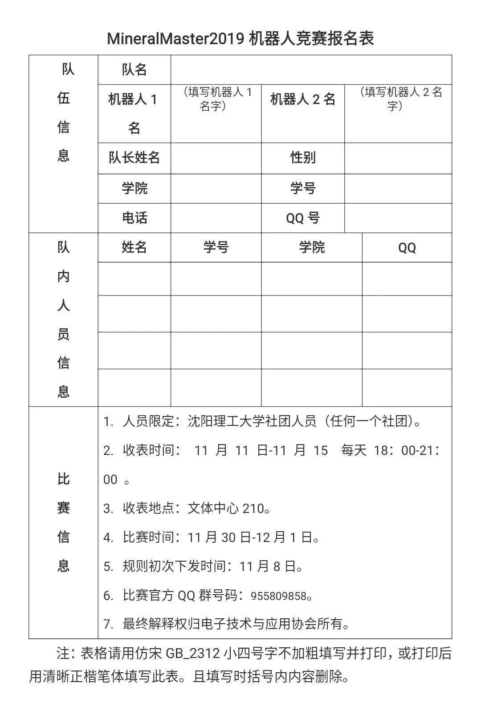
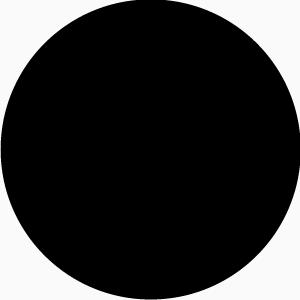

第五届“理工杯”机器人竞赛来啦！
第五届“理工杯”机器人竞赛
报名须知
大家期待已久的“理工杯”报名终于来啦！不管你是刚刚接触机制作器人的萌新，还是参加过机器人比赛的大神，只要热爱机器人，你就可以来报名！！！
“理工杯”机器人大赛介绍
“理工杯”机器人大赛是一场紧张刺激的机器人矿石运输大赛，同学们可以通过自己的双手创造出自己的遥控机器人，通过矿石的争夺，运输，触发机关获得相应的分数，以取得比赛的胜利。
“理工杯”机器人大赛主题
本届机器人大赛主题为“矿石运输”，是我校第五届机器人大赛，场地及规则设定充满趣味性和策略性。本次比赛旨在提高我校学生的动手能力，机械能力，编程能力以及思维能力，有利于提高我校学生综合素质，战术思维。现已经成为我校的传统比赛。
由于比赛具有创新性、趣味性、技术性、策略性，是我校学生每年一次智慧与动手能力的展示，是激发我校创新创业氛围的一个重要契机，更是让同学们从手机游戏中脱离出来，边玩边学专业知识的良好机会。亦可推动同学间的学术交流，带动我校的科研氛围。
“理工杯”机器人大赛报名须知
ps：如果有兴趣的同学一定要认真阅读以下说明哟！

报名方式：有参赛意向者需自行打印报名表并与规定时间内交至文体中心210。（点击“阅读全文”或者加入竞赛官方QQ群即可获得报名表）
人员限定：沈阳理工大学社团人员（任意社团均可）

！！！前方高能！！！
透露一则重磅消息：
本次理工杯机器人大赛我们将在32强队伍中抽取一支队伍送出无人机！赶紧来报名参加比赛吧！
编辑：孙恩汇
长
按
关
注
扫码了解“理工杯”更多咨询！
微信号 : 沈理电协

点“阅读原文”获取报名表